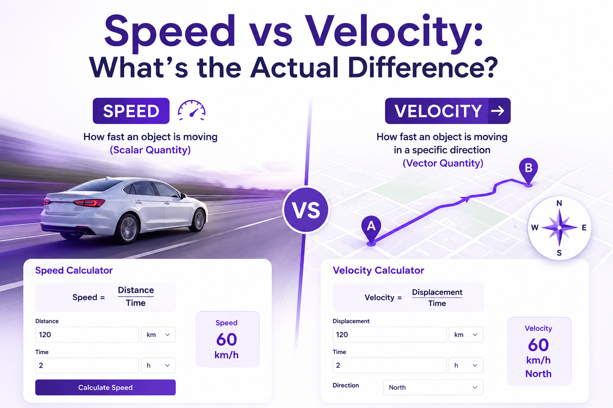

One of those words that we use all the time, like "how fast were you going," or "that download is slow," gets lost in its scientific definition. The term speed has a well-defined meaning, a clear formula, and a very distinct meaning from another very similar term that almost everyone confuses: velocity. This page clarifies, in simple terms and with examples you can work through.
The Scientific Definition of Speed
The term speed in physics refers to the distance travelled by an object per unit time. In other words, it is the distance an object covers over a period of time, in any direction.
Speed does not take direction, angles, or vectors into account; it's just a simple ratio of ground covered to time taken. That is why speed physics meaning is said to be a "scalar" quantity, meaning that it is a quantity with only magnitude but no direction.
Breaking Down the Formula
To define speed in physics with a working example, let's see how simple division translates to real speed:
Here it is important to remember that the units are relevant. Speed is always expressed in terms of how far a person or object travels in a certain amount of time. In the standard unit system of measurement (SI units), speed is measured in metres per second (m/s). On the road, in most countries, it is measured in kilometres per hour (km/h), and in imperial countries (like the USA and UK), it is measured in miles per hour (mph). The concept of speed in science remains the same regardless of what units are used: distance traveled divided by time taken.
Examples of Speed in Everyday Life
Understanding the definition is easier with real numbers attached to it:
- Highway driving: At a speed of 100 kilometres per hour (km/h), a car travels approximately 28 metres in just one second.
- Speed of Sound: The speed of sound in air at room temperature is at the rate of 343 m/s, which is more than 1,200 km/h (roughly 767 mph).
- Speed of Light: Light moves at about 300,000 km/s (kilometres per second), which is the cosmic speed limit — the fastest speed anything in the universe can travel.
- A sprinter on foot: Usain Bolt's world record time for the 100m sprint averages approximately 12.4 m/s (44.7 km/h or 27.8 mph), representing one of the fastest human running speeds ever recorded.
In each of these examples, the value being considered is the scalar: a single number that indicates how fast something is moving, without any reference to direction.
Speed vs Velocity: What's the Actual Difference?
In everyday language, the terms speed and velocity are used interchangeably, but in physics, the two terms are distinct.

Speed is a measure of how quickly something is moving. Velocity gives the direction and rate at which something moves. The only difference between speed and velocity is the one word direction.
What is called velocity is a vector quantity, for it has a magnitude (size/rate) and a direction. Speed is scalar; it has only size. The essence of the difference between velocity and speed is that one has direction and the other doesn't.
A Simple Way to Distinguish Speed From Velocity
Picture a runner completing one full lap around a 400-meter track in 80 seconds:
- To find their speed, we divide total distance by time: 400m ÷ 80s = 5 m/s.
- However, their average velocity is 0 m/s. Why? Velocity is calculated from displacement, not total distance. Displacement is the straight-line distance in the direction of the motion, from the origin (start point) to the final position.
- Since the runner ends their run at the exact same spot where they started, their displacement is zero, and thus their average velocity is zero.
In this case, the difference between speed and velocity is the clearest, as it is a case where the two are not only different, but very different, although the motion in question is the same.
Is Velocity the Same as Speed?
No, and it's because of the track example above. The term velocity can only be synonymous with speed when the object travels along a straight path and moves in one direction at a constant rate. In that particular case, the magnitude of the velocity is equal to the speed exactly because there's no directionality change to consider.
When an object changes direction, curves, or loops, speed and velocity diverge.
Comparing and Contrasting Speed and Velocity
| Aspect | Speed | Velocity |
|---|---|---|
| Type of quantity | Scalar | Vector |
| Includes direction? | No | Yes |
| Formula | Distance ÷ Time | Displacement ÷ Time |
| Can it be zero while moving? | No (unless stopped) | Yes, if it returns to start |
| Example unit | 60 km/h | 60 km/h, due north |
Why the Distinction Actually Matters
This isn't just academic hairsplitting. In real physics problems, projectile motion, orbital mechanics, and navigation systems, direction changes the entire outcome of a calculation. A plane flying at a constant speed but changing heading has changing velocity, even though its speedometer reading never moves.
GPS systems, autopilot software, and even basic sports analytics rely on this distinction constantly, because "how fast" and "how fast, in what direction" answer two entirely different questions.
Common Questions About Speed and Velocity
Does velocity have direction?
Yes, always. Direction is what separates velocity from speed in the first place. A velocity reading isn't complete without it — "20 m/s" is a speed, but "20 m/s eastward" is a velocity. Leaving out the direction turns a velocity value back into a plain speed value, which is why physics problems that ask for velocity expect an answer with both a number and a heading.
How do speed and velocity differ when an object speeds up or slows down?
Speed and velocity are not necessarily the same. When the speed of an object is constant, its velocity can change continuously. For example, a car going around a circular track at a constant speed has a changing velocity, because the direction of the car's motion is constantly varying, even though the rate at which it moves around the track is not. This is also the basis for centripetal acceleration, where the object's velocity keeps changing because its direction keeps changing, even though its speed stays constant.
Speed vs velocity — which one should I use in a physics problem?
It depends on the question. When a problem is only concerned with the total distance traveled as a function of time (such as fuel consumption or travel time), speed is the appropriate answer. If it relates to displacement, direction, or change in position — such as the distance traveled from the point a rocket is launched from to where it lands — then you need velocity. In a word, you'll typically know which one is going to apply when you see words such as "displacement," "net," or "direction."
Quick Recap
- Speed measures how much distance is covered over time. It is a scalar quantity with no direction.
- The formula is: Speed = Distance ÷ Time.
- Velocity adds direction to the equation, making it a vector quantity based on displacement rather than total distance.
- Speed and velocity are equal only when motion is in a single straight-line direction; otherwise, they diverge, sometimes dramatically (as with a runner completing a lap with real speed but zero velocity).
Once this distinction clicks, most other physics topics involving motion, acceleration, average velocity, and relative motion become far easier to follow, since nearly all of them build directly on the difference between "how fast" and "how fast, which way."